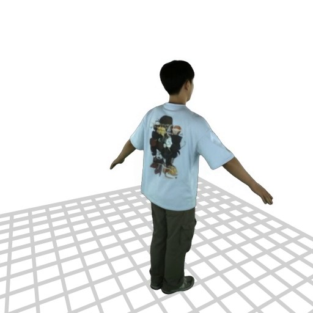
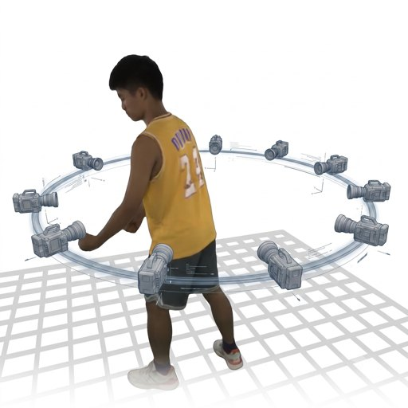
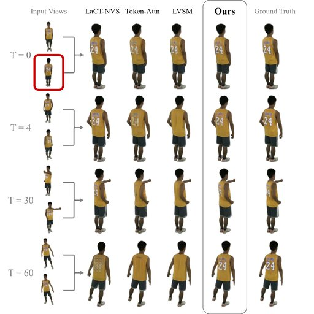
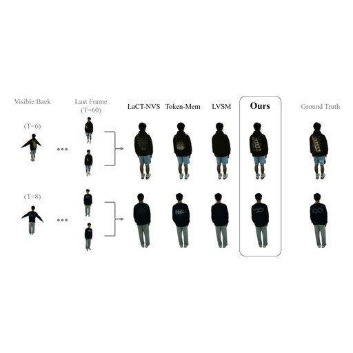
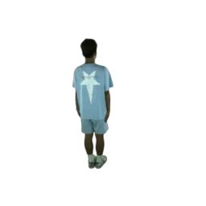
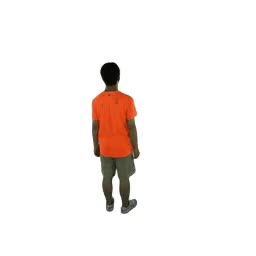

Online novel view synthesis from multi-view streaming videos faces a fundamental trade-off: maintaining a persistent, long-horizon memory to reconstruct temporarily occluded regions while operating under strict real-time constraints. While Test-Time Training (TTT) offers a powerful memory mechanism, standard models mandate gradient-based memory updates at every frame to adapt to the changing motion in dynamic scenes. The computational cost of heavy memory updates precludes real-time application and can lead to instability over long contexts. Given that memory updates are more demanding than memory application and video content is largely redundant, we propose to decouple the frequencies of these two processes. Our approach performs periodic memory updates while applying the memory on a per-frame basis, using cross-view attention to manage deformations between the prior memory state and the current frame. To lock in the historical context, we introduce two critical mechanisms: an auxiliary Memory Loss that forces persistent internalization of the scene, and a Memory Caching strategy that regularizes active weights against catastrophic drift. Our method demonstrates real-time, state-of-the-art performance on scenes with dynamic human motion as well as minute-scale online memorization.
Select a scene, then click models in the comparison strip to inspect them in detail below.
NSTM is the first online framework for dynamic novel-view synthesis to sustain minute-long memory at amortized real-time speed. The two diagrams below show how NSTM achieves this by (1) decoupling periodic, heavy memory updates from continuous per-frame synthesis, and (2) training with an alternating memorization and synthesis regime plus an auxiliary memory loss that internalizes persistent scene context.
We provide extensive video results, grouped by the experiments in our paper. 1-Min Demos showcase long-horizon recall; 360° Demos recall the past while performing novel-view-synthesis; the Memory Stress Test and Memory from Natural Rotations probe memory persistence over time and under natural motion; the Ablation Study isolates each design choice; and General NVS reports spatial generalization quality.






We would like to thank Michael Broxton and Ryan Overbeck for their encouragement and support of the project at Google. We also thank John Flynn and Osman Ulusoy for their valuable discussions and feedback on the manuscript, and Tianyuan Zhang and Bowei Chen for early clarifying discussions on LaCT. Finally, we extend our appreciation to Xiaoguang Han, Hongjie Liao, and Yihao Zhi for providing full-length MVHumanNet++ videos for our experiments. Baback Elmieh was supported in part by the University of Washington Reality Lab.
@article{elmieh2026nstm,
title = {Online Neural Space Time Memory for Dynamic Novel View Synthesis},
author = {Elmieh, Baback and Tsai, Lynn and Li, Zeman and Kaza, Srinivas and
Sun, Tiancheng and Csapo, Gabor and Behrouz, Ali and Deng, Yuan and
Lombardi, Stephen and Seitz, Steve and Luo, Xuan},
journal = {arXiv preprint},
eprint = {arXiv:XXXX.XXXXX},
year = {2026}
}